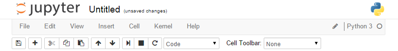
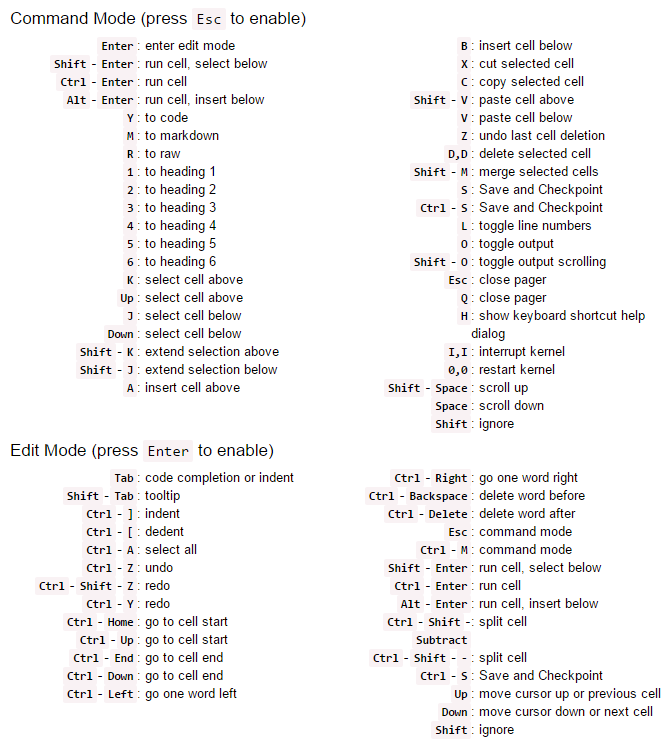

Proyecto Jupyter (parte 1) Instalar
Taller sobre el proyecto Jupyter; en la primera parte se describe qué es y cómo instalarlo.
25 October 2021
Descargar
Puede obtener el contenido de esta página como un notebook:
Proyecto Jupyter
El Proyecto Jupyter es una organización sin ánimo de lucro creada para "desarrollar software de código abierto, estándares abiertos y servicios para computación interactiva en docenas de lenguajes de programación".
Creado a partir de IPython en 2014 por Fernando Pérez, el proyecto Jupyter soporta entornos de ejecución en varias docenas de lenguajes de programación. Los tres lenguajes de programación soportados por Jupyter son Julia, Python y R.
La filosofía operativa del Proyecto Jupyter es apoyar la ciencia de datos interactiva y la computación científica en todos los lenguajes de programación mediante el desarrollo de software de código abierto. Según el sitio web del Proyecto Jupyter, "Jupyter siempre será un software 100% de código abierto, de uso gratuito para todos y lanzado bajo los términos liberales de la licencia BSD modificada".
Instalar IPython
Previamente debe tener instalado Python
python -m venv venv
. venv/bin/activate
pip list
pip install --upgrade pip
pip install wheel
pip install ipython
Para ejecutar
ipython
Instalar Jupyter Notebook
Comandos para instalar notebook
python -m venv venv
. venv/bin/activate
pip list
pip install --upgrade pip
pip install wheel
pip install notebook
Ejecute con...
jupyter notebook
Se abrirá su navegador de internet con el dashboard listo.
Instalar JupyterLab
JupyterLab es un entrono de desarrollo en web para Jupyter notebooks, código y datos. JupyterLab es muy flexible: puede configurar flujos de trabajo para ciencia de datos, cómputo y aprendizaje de las máquinas. JupyterLab es modular: puede agregar componentes o escribirlos como plug-ins.
Para instalar ejecute estos comandos:
python -m venv venv
. venv/bin/activate
pip list
pip install --upgrade pip
pip install wheel
pip install jupyterlab
Ejecutar con...
jupyter-lab
Probar Jupyter Notebook sin instalar
Abra su navegador de internet y vaya a https://jupyter.org/try
Conozca Google Colaboratory
Con Google Chrome y tu cuenta Google ve a colab.research.google.com/notebooks
Los notebooks se guardarán en Google Drive. Lee la Introducción a Colab
El Dashboard
Cuando arranca por primera vez el servicio se muestra el Dashboard. El Dashboard es la página inicial del Notebook.

Notarás que aparecen las siguientes pestañas:
- Pestaña Files: Te permite localizar un archivo o directorio para abrirlo.
- Pestaña Running: Lista los notebook que están en ejecución.
- Pestaña Clusters: requiere IPython Parallel.
Y los botones
- New: Para crear un nuevo notebook.
- Upload: Para cargar un notebook desde un archivo.
Notebook
Los archivos notebook tienen la extensión ipynb. Al abrir un Notebook aparecerán...
Header (cabecera): menubar, toolbar

Body (cuerpo): donde encontrarás las celdas

- Markdown cells
- Code cells
- Raw cells
Una celda puede tener dos modos
- Modo edición: borde azul, presione ENTER o de click en la celda
- Modo comando: borde verde, presiones ESC o de click fuera de la celda
Atajos de teclado
